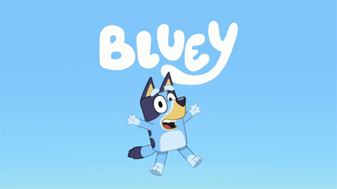
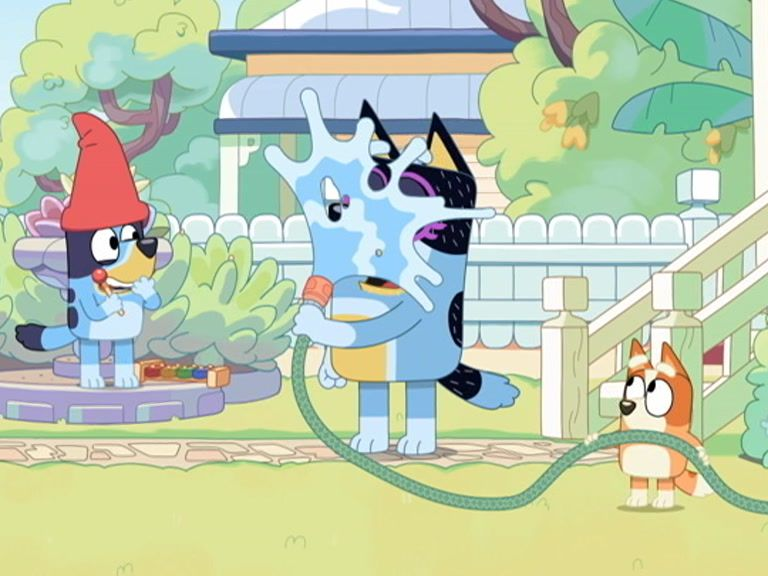

Bluey Becoming a Movie
by the number one bluey fan Jan.31.2025
BBC Studios and The Walt Disney Company today announced the first-ever animated feature film for Bluey. The film will premiere in cinemas worldwide in 2027, followed by streaming on Disney+. The movie will also air on ABC iview and ABC Kids in Australia post-theatrical release. Written and directed by Bluey creator Joe Brumm, the film is a Ludo Studio production in collaboration with BBC Studios. The film will star vocal talent from series, including Melanie Zanetti and David McCormack, along with music created by Bluey composer Joff Bush.
The CG animated film will be produced by award-winning animation producer Amber Naismith (‘Happy Feet’, ‘The Lego Movie’, ‘The Lego Batman Movie’) with Richard Jeffery returning to co-direct (’Bluey’ Series 1-3). Joe Brumm will serve as executive producer, alongside Charlie Aspinwall and Daley Pearson from Ludo Studio, and Justine Flynn for BBC Studios.The film will premiere in cinemas worldwide in 2027, followed by streaming on Disney+. The movie will also air on ABC iview and ABC Kids in Australia post-theatrical release. Bluey creator Joe Brumm said: “I really enjoyed the experience of working with a longer format on ‘The Sign’ in Series 3, so going even further with a feature film feels like a natural extension of that. I’ve always thought ‘Bluey’ deserved a theatrical movie. I want this to be an experiential event for the whole family to enjoy together. I’m excited to continue to partner with Cecilia Persson, Tom Fussell and the team at BBC Studios, and Dana Walden, Alan Bergman and Disney to bring this new ‘Bluey’ story to the big screen.” Daley Pearson and Charlie Aspinwall, Co-Founders and Directors, Ludo Studio, said:
“Over the past eight years, we’ve had the privilege of working alongside an extraordinary team of more than fifty artists and producers whose talent, dedication, and creativity have shaped ‘Bluey’ into the beloved series it is today. Their work has paved the way for this incredible opportunity to expand ‘Bluey’s world onto the big screen. We’re excited to continue showing Queensland as a home for world-class talent and to share a new beautiful ‘Bluey’ story by Joe Brumm with families around the world.”
Magic Xylophone
by Bluey Blogger
The Magic Xylophone gives you the power to freeze and unfreeze people! But will Bluey and Bingo learn to share?
Hospital
by Bluey Blogger
Bluey and Bingo play 'Hospital' with their dad, who is the very sick patient. But is he really that sick?
Keepy Uppy
by Bluey Blogger
Bluey and her family play 'Keepy Uppy' with a balloon, but things get tricky when Dad adds a challenge!
Daddy Robot
by Bluey Blogger

Bluey and Bingo build a Daddy Robot, but when they give him too many chores, he starts malfunctioning!